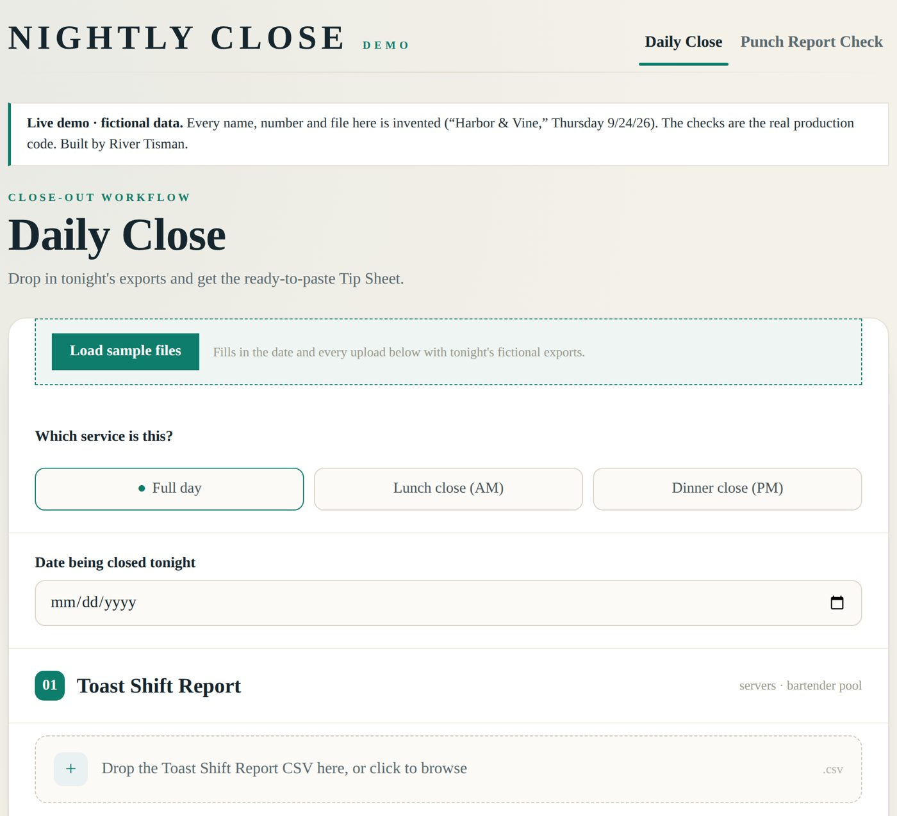
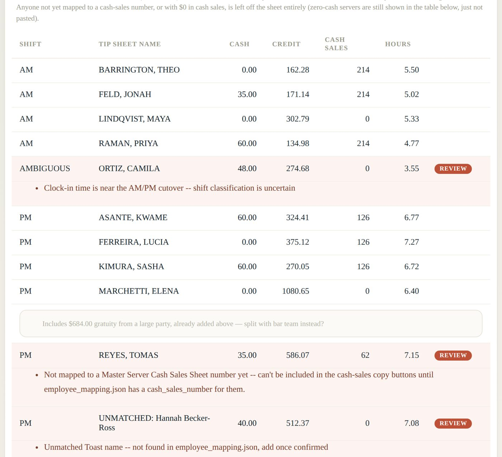
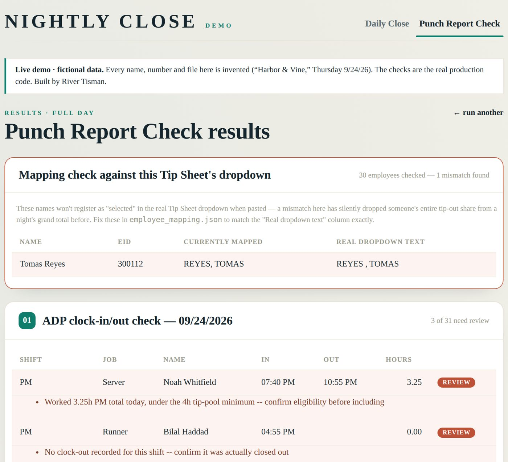
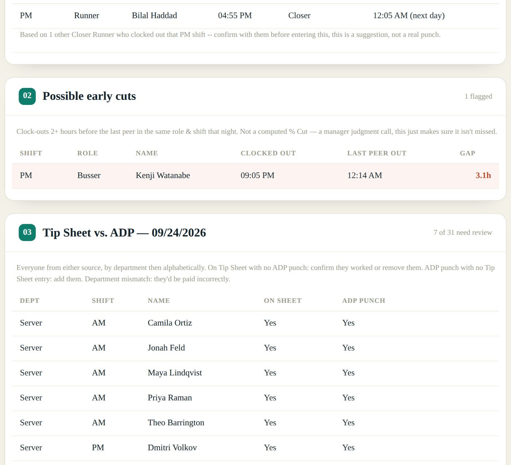

A web app I built and run at the restaurant I manage. It reads the night's exports from Toast, HotSchedules and ADP, checks them against our Excel Tip Sheet, and returns ready-to-paste tip entries plus a short list of the decisions a manager actually has to make.
The demo runs on a free server; the first visit can take up to a minute to wake it. Press “Load sample files,” then “Fire.”
Every night a manager copies tips from Toast into a 16-tab Excel workbook, then checks it against the schedule and the time clock. Each system writes the same person differently: Andrea Lopez in Toast, ANDREA LOPEZ on the schedule, LOPEZ, ANDREA in the sheet. Support staff never appear in Toast at all. Bartenders share one drawer.
The workbook totals each person's tip-out with SUMIF on their exact name. That is where the real risk was.
A name in the sheet differed from its dropdown by a single character. Excel didn't show an error. SUMIF quietly returned $0, and a runner's whole share dropped out of that night's total.
Later, the app's own formula audit found an entire section of the workbook shifted one row: the first barista totalled a blank cell and every barista below her was paid the tips of the person above.
The Daily Close page turns two exports into tab-separated rows that paste straight into the sheet's Name, Cash and Credit columns, plus the bartender pool totals and the support-staff roster by role. Anything it can't be sure of is held out of the paste and flagged with a reason.




Screenshots are from the public demo. Every name, ID and amount in them is invented.
One mapping file is the only source of truth. A name either matches exactly or gets flagged. Similarity scoring exists in one place: ordering a list a person picks from.
Call-ins, house shifts and trainees are never silently included or excluded. They default to held out, and the manager confirms each one on the results page.
A recommended clock-out is averaged from peers in the same role and the same opener, mid or closer shift, and labelled as something to confirm with the employee. It is never written as a punch.
The sheet's dropdowns are an Excel extension that common Python libraries drop on save. When the app adds an employee it edits the file's XML directly and changes only two internal parts.
Adding an employee writes the name into the workbook and the mapping from the same string, so the two can't disagree. Every change is committed to Git, which gives a full history of hires and terminations.
Uploads live in a temporary folder for one request and are deleted. No database, no stored payroll data, and it runs on a free hosting tier.
I wrote the app with Claude Code. My job was the part software can't infer: defining the problem, writing down the business rules managers carry in their heads, and testing every change against real nights of data until the output matched the sheet a manager would have built by hand.